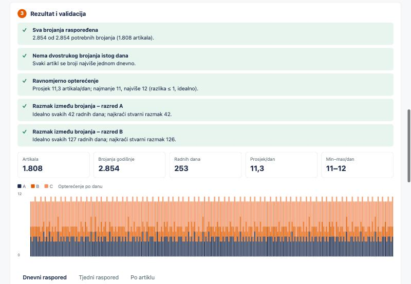
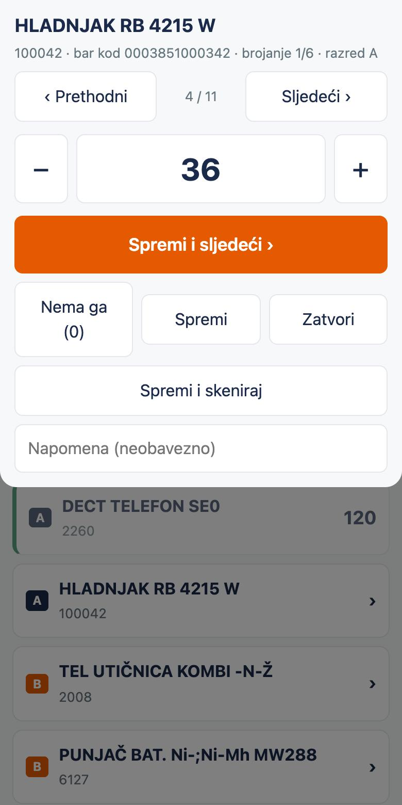
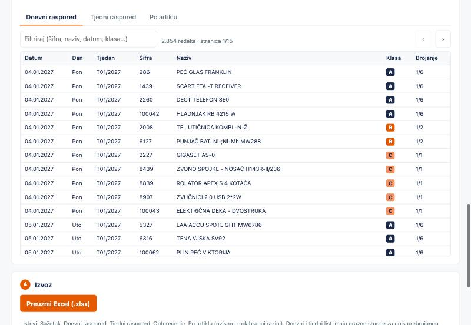
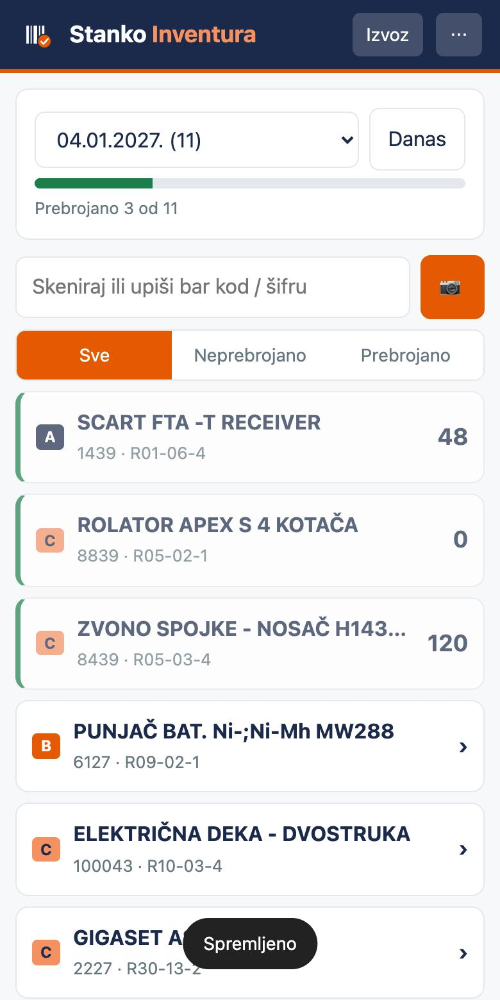

Učitajte popis artikala i za nekoliko minuta dobijte raspored brojanja za cijelu godinu, s ravnomjernim opterećenjem po danima ili tjednima. Skladištar zatim broji na mobitelu, a rezultat izvozi u CSV ili Excel.


Većina skladišta jednom godišnje stane i broji sve. Ciklička inventura broji malo, ali stalno, a ovaj alat rješava ono što je u praksi najteže: kako raspodijeliti tisuće brojanja kroz godinu tako da svaki dan ostane podnošljiv.
Excel ili CSV sa šifrom, nazivom i vrijednošću. Alat sam razvrsta artikle u razrede A, B i C po ABC pravilu.
Brojanja se ravnomjerno raspoređuju po radnim danima ili tjednima, uz validaciju da je svako brojanje na popisu.
Skladištar svaki dan dobije svoj popis, skenira bar kod, upisuje pronađenu količinu i na kraju izvozi rezultat.
Planer radite jednom godišnje na računalu. Aplikaciju za brojanje koristi skladištar svaki dan.

Pravila brojanja (A šest puta, B dva puta, C jednom godišnje) možete mijenjati. Raspored može biti dnevni ili tjedni; u tjednom načinu birate hoće li dan brojanja odlučiti skladištar ili će se uvijek brojati istog dana u tjednu. Rezultat je Excel s listovima po danima, po tjednima i po artiklu.
Otvori planer
Učitate godišnji plan jednom, a aplikacija svaki dan otvori popis za taj dan. Brojanje je slijepo, bez prikaza stanja iz sustava. Radi bez interneta, a izvoz u CSV ili Excel možete ručno ili poluautomatski prenijeti u WMS ili ERP.
Otvori aplikacijuBez registracije i bez instalacije. Planer radi u pregledniku, a aplikaciju za brojanje možete dodati na početni zaslon Androida.
Godišnja inventura jednom vrati stanje gotovo na vrh, ali se točnost zatim troši iz mjeseca u mjesec: svaka krivo upisana količina i svaki zaobiđeni dokument ostaju u sustavu do sljedeće inventure.
Ciklička inventura ne počinje s vrha, ali točnost stalno popravlja i drži. U pravilu najbolje rezultate daje kombinacija: godišnja inventura kao polazna točka, a ciklička kao održavanje tijekom cijele godine. Cilj je točnost zaliha od 98 % i više.
Čini ono što je veliko dok je još malo.
Laozi (Lao Tzu), Tao Te Ching
Najveće stvari na svijetu moraju biti učinjene dok su još male.
Ciklička inventura je upravo to: nekoliko artikala svaki dan umjesto svega jednom godišnje.
Ciklička inventura održava točnost zaliha, ali ne objašnjava zašto se razlike uopće događaju. Na Supply Chain dijagnostici 1 na 1 (online, 90 minuta, 297 € bez PDV-a) zajedno ocjenjujemo stanje vašeg lanca opskrbe, a vi dobivate mapu prioriteta i plan akcija za idućih 90 dana.